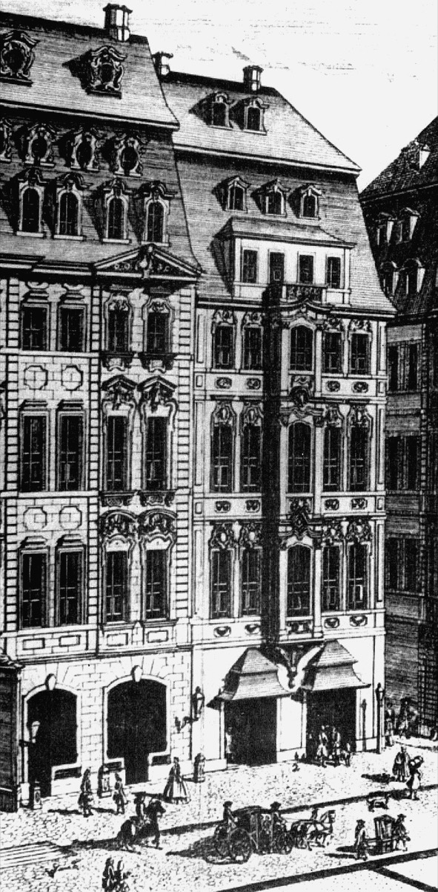

The Harpsichord Concertos
Occasion — Collegium Musicum concerts at Zimmermann's
Dating — Arranged/composed c. 1729–1740 for the Collegium Musicum, mostly reworking earlier (often lost) violin and wind concertos.
Recommended recording — Trevor Pinnock, The English Concert, Bach: Harpsichord Concertos (Archiv) · Recordings Shelf
Score — IMSLP (free score)

What it is. The founding documents of the keyboard-concerto genre: seven concertos for one harpsichord and six for two, three, or four — assembled for the coffee-house concerts, with Bach and his sons at the instruments. Nearly all are Bach's arrangements of his own earlier concertos (violin and wind originals, many now lost) — which makes the set both a Friday-night repertoire and an act of preservation: several vanished works survive only in these keyboard clothes, and scholars reconstruct the originals from them.
Listen for. The left hand: where the old continuo harpsichord doubled the bass, the solo instrument now argues with it — the Fifth Brandenburg's coup become a genre. In the multiple-harpsichord works, the family-band delight is audible (the four-harpsichord BWV 1065 is Bach arranging Vivaldi — the Weimar apprenticeship returning as public homage).
Why it matters. Mozart's, Beethoven's, and every later piano concerto descends from these Friday evenings. Individual cards: BWV 1052 and BWV 1056 featured; the rest join the R3 completion batch.